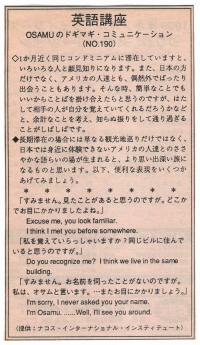

私を覚えていらっしゃいますか。
１ヵ月近く同じコンドミニアムに滞在していますと、いろいろな人と顔見知りになります。また、日本の方だけでなく、アメリカの人達とも、偶然、外でばったり出会うこともあります。そんな時、簡単なことでもいいから、ことばを掛け合えられたらと思うのですが、はたして相手の人が自分を覚えていてくれるだろうかなどと、余計なことを考え、知らぬ振りをして通り過ぎることがしばしばです。
長期滞在の場合には、単なる観光地巡りだけではなく、日本では身近に体験できない、アメリカの人達とのささやかな語らいの場が生まれると、より思い出深い旅になるものと思います。以下、便利な表現をいくつかあげてみましょう。
すみません。見たことがあると思うのですが。
どこかでお目にかかりましたよね。
Excuse me, you look familiar.
I think I met you before somewhere.
私を覚えていらっしゃいますか？
同じビルに住んでいます。
Do you recognize me?
I think we live in the same building.
すみません。お名前を伺ったことがないのですが。
I'm sorry, I never asked you your name.
私は、オサムと言います。また、お目にかかりましょう。
I'm Osamu. Well, I'll see you around.

| © 1995-2013 NACOS International Institute. All Rights Reserved. |